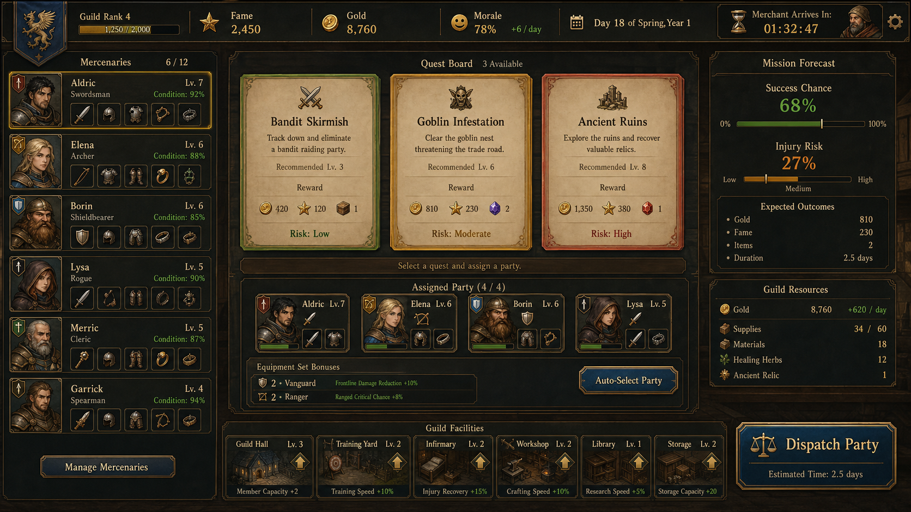

.worktrees/systems-overhaul가 존재해 시스템 개편 작업이 별도로 진행 중임을 시사([문서 존재] 근거: docs/superpowers/plans/2026-04-21-refactor.md).유저가 선택을 하면 결과가 되고, 그 결과 때문에 다시 선택을 한다.
tsc && vite build. dev 스크립트: vite.node --test tests/roomAgents.test.mjs tests/onboardingAdvisor.test.mjs tests/tacticalReplayInsights.test.mjs — 3개 테스트 파일 실행을 명시(실제 실행 결과/통과 여부는 관찰되지 않음).| 직업 | 전술 역할 | 유리한 몬스터/상황 | 실제 효과 | 위험·대가 |
|---|---|---|---|---|
| 전사 | 전열 수호 | 3마리 이하 소수전 | 소수전 성공률 +8%p, 다른 직업 사망 위험 ×0.72 | 자신의 사망 위험 ×1.12 |
| 궁수 | 원거리 지원 | 비행·도주, 대형·거대, 함정 | 비행전 +10%p, 대형전 +4%p, 비행전 사망 위험 ×0.75 | 기본 방어 보정 없음 |
| 도적 | 탐사·회수 | 함정, 고가치 전리품 | 조건부 성공률 +10%p, 대량 부산물 기준 8%p 완화, 특별 아이템 +6%p | 정면전·장기 생존 보정이 적음 |
| 마법사 | 광역 섬멸 | 8마리 이상 다수전 | 다수전 성공률 +10%p, 다수전 사망 위험 ×0.78 | 기본 사망 위험 ×1.40 |
| 성직자 | 생존 지원 | 언데드·장기전·전열 보호 | 기본 +8%p, 언데드 +12%p, 파티 사망 위험 ×0.85, 전사 ×0.72, 장기 소모 ×0.90 | 기본 사망 위험 ×1.30 |
| 종족 | 핵심 역할 | 실제 효과 | 추천 조합 |
|---|---|---|---|
| 인간 | 협업과 적응 | 1명당 성공률 +2%p, 최대 +6%p | 혼합 파티 |
| 엘프 | 정찰과 마법 감응 | 비행/자연 +5%p, 특별 아이템 +2.5%p | 궁수·마법사·도적 |
| 드워프 | 강인함과 채굴 | 장기전 사망 ×0.82·소모 ×0.85, 거대전 사망 ×0.85·성공 +4%p, 광석 +20% | 전사·성직자 |
| 수인 | 추적과 사냥 | 소수전 +5%p, 부산물 +10% | 전사·도적 |
| 속성 | 고유 특화 | 추가 효과 | 기본 상성 |
|---|---|---|---|
| 불 | 다수전 | 8마리 이상 성공률 +5%p | 자연에 유리, 얼음에 불리 |
| 얼음 | 소모 억제 | 장기 소모 ×0.70, 얼음 지역 일치 시 추가 ×0.50 | 불에 유리, 자연에 불리 |
| 자연 | 부산물 회수 | 1명당 부산물 +12% | 얼음에 유리, 불에 불리 |
| 암흑 | 은밀 탐색 | 암흑 함정 보정, 특별 아이템 +3.5%p | 빛과 상호 대립 |
| 빛 | 언데드 정화 | 언데드 +7%p, 사망 위험 ×0.82 | 암흑과 상호 대립 |
공통 속성 상성: 우위는 실효 전력 ×1.20·성공률 +10%p·사망 위험 ×0.85, 열위는 실효 전력 ×0.85·성공률 -5%p·사망 위험 ×1.15이다. 퀘스트 속성과 일치하면 사망 위험 ×0.50이다.
| 몬스터 정보 | 구분 기준 | 영향을 받는 조합 | 게임 내 영향 |
|---|---|---|---|
| 숫자 | 소수 1~3, 보통 4~7, 다수 8 이상 | 소수=전사·수인, 다수=마법사·불 | 성공률·사망 위험 변화, 마리당 부산물 증가 |
| 크기 | 소형·중형·대형·거대 | 대형/거대=궁수, 거대=드워프 | 대형 부산물 +25%, 거대 +45%, 대응 직업 보정 |
| 속성 | 불·얼음·자연·암흑·빛 | 용병 속성 일치·우위·열위 | 실효 전력·성공률·사망 위험 변화 |
| 언데드 | 유령·망령·해골·좀비·사령·묘지 | 성직자·빛 | 성공률 상승, 파티·개인 사망 위험 감소 |
| 비행·도주 | 하피·와이번·그리핀·추격 | 궁수·엘프 | 성공률 상승, 궁수 사망 위험 감소 |
| 예상 외 강적 | 위협도 1.20~2.00배 | 생존형 조합 | 컨디션 추가 소모, 특별보수 성과 기록 |
몬스터 편성은 퀘스트 ID 기준으로 고정되며 계약 화면과 결과 기록에 공개된다.
docs/design-references/2026-09-21-quest-readiness-comparison.png| 구분 | 구현 |
|---|---|
| 레이아웃 | 기존 계약 카드 전력 바 아래 비교 섹션 |
| 컴포넌트 | 비교 헤더, 4개 요구/현재 행, 행동 힌트 |
| 데이터 | Quest, Mercenary[], effPowerVs, elementRelation, canTrap |
| 검증 | 2026-09-21 테스트 26개 및 프로덕션 빌드 통과, 수동 시각 QA 미검증 |
npm test 30개 테스트 통과, npm run build 통과(2026-10-06).